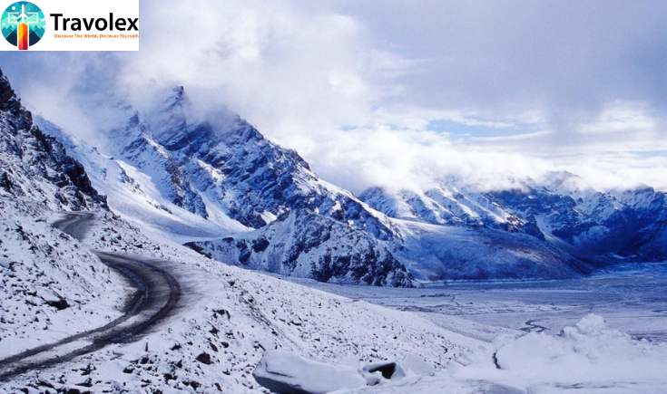

27 September
Known as the "Land of Snow," Himachal Pradesh is transformed into a winter paradise from November to March. With its calm scenery, snow-capped mountains, and quaint hill stations, it provides visitors looking for a winter getaway with the perfect getaway. One of
Pune's top tour and travel companies
, Travolex, specializes in offering specially designed vacation packages to these stunning locations. Regardless of your preferences for adventure, culture, or peace and quiet, Travolex guarantees a hassle-free and remarkable trip. Here are a few of thebest destinations in Himachal Pradesh
for a memorable winter getaway.1. Kufri: The Winter Sports Hub
Kufri is well known for its breathtaking scenery and adventurous sports, and it's only 20 kilometers from Shimla. With its chances for skiing and snowboarding, this little hill station is a
popular destination for fans of winter sports
. A popular yearly event, the winter sports festival takes place in February. Kufri's snow-covered scenery offers a wonderful setting for outdoor sports and family pleasure, especially when temperatures drop as low as -4°C. To guarantee you get the most out of your wintertime explorations in Kufri, Travolex provides meticulously designed itineraries.2. Rohtang Pass: A Thrill-Seeker’s Paradise
Rohtang Pass is a must-visit for adventure seekers. This high-altitude pass offers amazing vistas and exhilarating experiences, connecting Manali with the Lahaul and Spiti regions. Experience the surge of excitement in the breathtaking natural splendor of Rohtang Pass, whether you're biking on slick roads or having a snowball battle. Unfortunately, due to severe snowfall, entry is only possible during certain months and requires permission. Travolex makes sure that everything is in order and facilitates a hassle-free journey to Rohtang Pass.
3. Manali: The Quintessential Hill Station
In Himachal Pradesh, one of the
most well-liked winter vacation spots
is Manali. It offers a variety of sports like skiing at Solang Valley and paragliding over Kullu Valley. It is well-known for its gorgeous landscapes and lively culture. Cozy cafes with views of snow-capped peaks are scattered around the quaint Old Manali neighborhood, providing a perfect spot to warm up with hot chocolate. You may discover Manali's main attractions with Travolex, guaranteeing an exciting and restful stay. 4. Khajjiar: Mini Switzerland
Known as "Mini Switzerland," Khajjiar attracts tourists with its beautiful meadows encircled by snow-capped mountains and deep forests. Families and couples wishing to unwind in the great outdoors will love this calm location. The native food enhances the overall experience, and the scenic views are perfect for photography. With plenty of time to take in the breathtaking surroundings of Khajjiar, Travolex can assist with making travel arrangements.
5. Parashar Lake: A Hidden Gem
A peaceful
location that provides isolation from the busy tourist areas
is Parashar Lake. This undiscovered jewel, tucked away among snow-capped mountains, is ideal for peace-seekers and lovers of the outdoors. The lake is a great place for picnics and photography because it is surrounded by lush flora in the summer and turns into a snowy paradise in the winter. Unconventional vacation packages from Travolex feature soothing locations like Parashar Lake, which are ideal for a quiet winter getaway.6. Shimla: The Capital City
The capital of Himachal Pradesh,
Shimla, is a well-liked winter vacation spot
that draws visitors all year long. While Jakhoo Hill gives expansive views of the surrounding snow-covered mountains, Mall Road provides retail options amid colonial architecture. Shimla is ideal for family vacations and romantic getaways due to its enchanting atmosphere. Travel planning to Shimla is made easy with Travolex, which guarantees the ideal balance of leisure, shopping, and sightseeing.7. Spiti Valley: The Cold Desert
During the winter months, Spiti Valley offers a unique experience for those who are courageous and seeking isolation. This area, well-known for its bleak scenery and historic monasteries, provides stunning vistas of frozen rivers and mountains blanketed in snow. Though heavy snowfall can make access difficult, those who persevere are rewarded with breathtaking views and a peaceful atmosphere. Travolex is an expert in planning exciting, action-packed excursions to Spiti Valley, ensuring that you can comfortably enjoy this chilly desert.
Why Choose Travolex for Your Himachal Pradesh Adventure?
Wintertime in Himachal Pradesh is a magical time of adventure, peace, and breathtaking scenery. Everyone looking for an unforgettable winter getaway can find something to enjoy, from well-known locations like Manali and Shimla to undiscovered treasures like Parashar Lake and Barot Valley. You may discover Himachal Pradesh without any worry when you work with Travolex, a reputable tour and travel company. We take care of everything, from planning to obtaining permits, to make sure your trip is enjoyable and memorable.